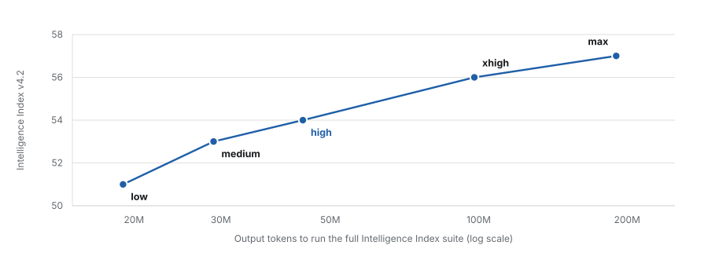
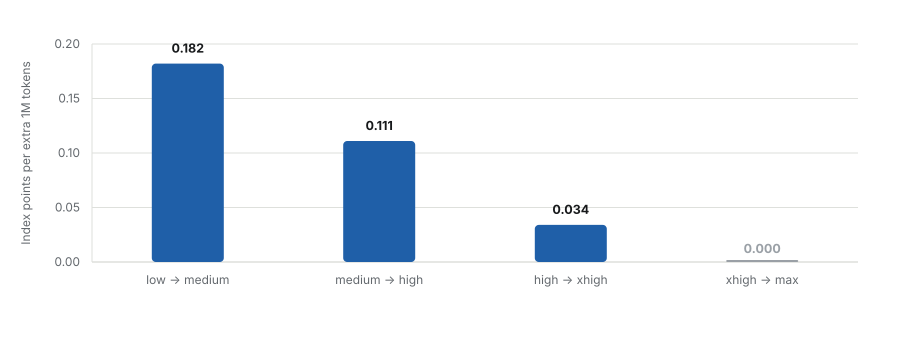
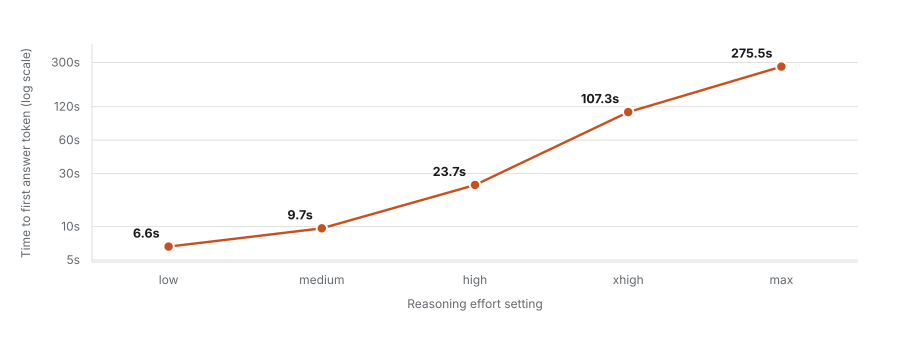
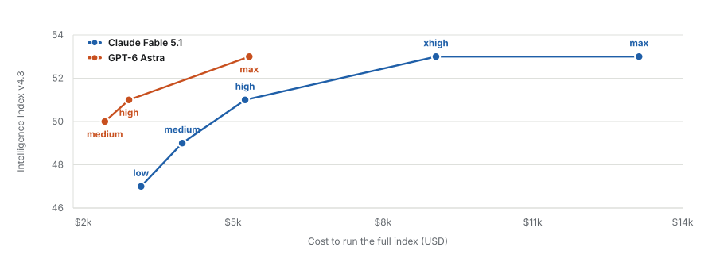
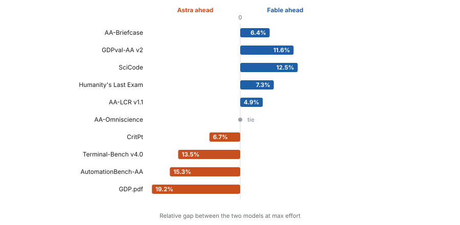
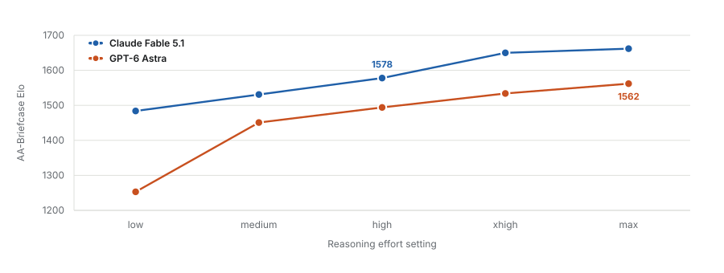

Reasoning effort is not a quality dial; it is a budget for deliberation over whatever is already in the context window. That distinction decides the whole analysis. Raising effort lets the model spend more tokens reasoning before it commits to an answer, which helps when the answer is genuinely hard to derive from material the model can already see. It does nothing when the material in front of the model is the wrong material. The five settings are therefore five points on a deliberation-budget curve, and the question is where that curve stops repaying its cost. The answer on the current index is earlier than I would have guessed, and the choice I now think matters more is a different one entirely.
A note on the index version
Artificial Analysis has retired Intelligence Index v4.2 and rescored every model on v4.3, whose agentic-coding component is now Terminal-Bench v4.0 rather than v2.1. The two versions are not comparable, and the models did not change: only the measurement did. Every figure on this page is v4.3.
Section oneWhat the dial actually controls
Fable 5.1 ships with five effort settings: low, medium, high, xhigh and max. Anthropic sets high as the default in Claude Code and medium in the consumer surfaces. Artificial Analysis evaluates all five, running each through the identical Intelligence Index v4.3 suite, which is the only public dataset holding the workload constant while varying only the effort parameter.
Holding the workload constant matters more than it appears. Every published comparison of effort settings measures how much deliberation a model spends on a fixed set of tasks, not how well it performs on tasks of different shapes. The curve below measures one thing precisely: the return on additional deliberation, given a problem that is fixed and correctly specified. It is silent on the failure mode I take to dominate large real codebases: the problem being specified from the wrong files.
Section twoThe curve, and where it goes flat
The horizontal axis is logarithmic, so a constant return per doubling of spend would appear as a straight line. Any downward bend is real diminishing return rather than an artefact of the scale.

That terminal flat segment is new to v4.3. On the previous index there was still a single point of separation between xhigh and max. There is now none, so I read the most expensive setting Fable offers as indistinguishable, on this evaluation, from the setting below it.
Section threeThe last setting buys nothing

High is the last setting where I can see the marginal token doing recognisable work. Expressed as absolute efficiency the same collapse appears: 1.42 index points per million tokens at low, 0.82 at high, 0.28 at max.
Section fourLatency is the cost that scales worst
Tokens are the cost that appears on an invoice. Time to first token is the cost that is felt, and it scales far worse than price does. Effort budgets are consumed before the first output token is emitted, so the entire deliberation cost is front-loaded into the wait.

Section fiveThe other axis: which model
Everything above varies one parameter. The more interesting comparison varies the other. GPT-6 Astra is evaluated on the same v4.3 suite at the same list prices, ten dollars per million input tokens and fifty per million output, which makes the cost comparison unusually clean: any difference in spend is a difference in token efficiency rather than in pricing.

If the index score were the whole story the conclusion would be simple and would not favour Fable. I want to be clear about that before going further, because the rest of this section complicates it, and I do not want the complication mistaken for the starting position.
Section sixTen benchmarks, and a split decision
The index is a composite of ten evaluations. A tie on the composite is compatible with large differences underneath it, and here the differences are large and they point in both directions.

I want to single out two results, because they cut against the obvious narratives. CritPt goes to Astra, 32 against 30. CritPt is research-level physics reasoning: 71 unpublished frontier problems contributed by more than fifty physics researchers across eleven subfields, in guess-resistant formats. If Fable's advantage were fundamentally about depth of physical-science knowledge, that is the benchmark it should win, and it does not. AA-Omniscience ties at 43, but underneath the tie Fable posts 67 per cent raw factual accuracy, the highest figure on the entire leaderboard. The index penalises confident wrong answers and rewards abstention, so I read Astra's parity as bought by declining more often rather than by knowing more.
Section sevenThe only matched-effort comparison
Every figure so far compares the two models at max effort, which is nobody's working configuration. AA-Briefcase is the one evaluation publishing both models at all five settings, and it is therefore the only genuinely matched comparison available. It scores long-horizon agentic knowledge work: four multi-week projects, 91 tasks, graded on rubric pass rate, analytical quality and presentation quality combined into an Elo.

The magnitudes here are worth comparing directly against the effort dial, because they are in the same units. Moving Fable across its entire effort range, from low to max, gains 178 Elo. Swapping Astra for Fable at a fixed effort gains between 84 and 231, with a typical value near 100. On this benchmark the choice of model is worth somewhere between half and the whole of the choice of effort setting. That is the claim I put in the title, and AA-Briefcase is where I can point to it measured rather than asserted.
Section eightWhat the split is actually tracking
The wins are not scattered at random. Fable takes AA-Briefcase, GDPval-AA v2, AA-LCR, Humanity's Last Exam and SciCode: long-horizon work over dense inputs, long-context reasoning, and knowledge recall and synthesis. Astra takes Terminal-Bench v4.0, AutomationBench-AA, GDP.pdf and CritPt: shorter-horizon tool execution, automation, extraction, and constrained problem solving. AA-Omniscience fits the pattern as well once the tie is decomposed, since raw recall favours Fable and calibrated abstention favours Astra.
The mechanism I read out of this is not that one model is smarter. It is that the two have different profiles across context length and horizon. Sustained reasoning over a large amount of already-loaded material is where Fable separates; short, well-scoped, tool-driven tasks are where Astra does. Those are different jobs, and a codebase of serious size imposes the first one on almost every task, because the context is always large and the reasoning always has to hold many pieces at once.
The distinction worth keeping
The index score answers "how capable is this model on a fixed public suite". It does not answer "which model suits the shape of my work". Those come apart here: the models tie at 53 while differing by 12 per cent on SciCode in one direction and 13 per cent on Terminal-Bench in the other. Pick the benchmark whose task shape resembles yours, and ignore the composite.
Section nineWhat this evidence cannot settle
Nine of the ten sweep comparisons are at max effort for both models, which is neither of the settings most people run. AA-Briefcase is the only matched-effort series, so the central claim I make in section seven rests on a single benchmark. Terminal-Bench v4.0 publishes only xhigh and max for either model, so the coding-specific comparison has no entry at all at high or medium.
Several of the gaps are small enough to be within benchmark noise. I would not act on a two-point CritPt difference or a four-point AA-LCR difference on its own; they matter here only as part of a consistent pattern across ten evaluations, and the pattern is the claim rather than any single row.
The limitation I cannot get past is one of construct rather than measurement. These are eval-suite aggregates over tasks whose context is supplied correctly by the harness. On a codebase of any real size the dominant failure mode is not shallow reasoning over the right files; it is confident reasoning over the wrong ones. Raising effort makes that failure worse rather than better, because it produces more elaborate and more plausible inference from the same faulty premises. Neither the effort dial nor the model choice substitutes for getting the right material in front of the model, and nothing measured here lets me put a number on what that costs.
A companion instrument
The one thing measured here that effort cannot improve is knowledge, and the public benchmark closest to it, AA-Omniscience, has the two leading models tied. I think that is a poor place to leave the question, because a leaderboard averages over subjects somebody else chose. A closed-book probe publishes the prompt, thirty items, an answer key and a scoring scheme for measuring the same thing on your own material, in your own words.
The dial is nearly exhausted by the time it reaches high, and entirely exhausted above xhigh. The model choice is not exhausted at all, and on the one benchmark that measures both at matched settings it is worth as much as the whole dial. Most of the attention I see spent on effort settings would be better spent on which model is reading the code, and almost all of it would be better spent on which code the model is reading.
Sources
Primary data. Artificial Analysis: Claude Fable 5.1 model pages for low, medium, high, xhigh and max effort; GPT-6 Astra model pages for medium, high and max; the GPT-6 Astra versus Claude Fable 5.1 comparison page; and the leaderboards for AA-Briefcase, AA-Omniscience, CritPt, SciCode and Terminal-Bench v4.0. All figures are Intelligence Index v4.3. Retrieved 8 September 2026.
Vendor and benchmark material. Anthropic, "Introducing Claude Fable 5.1 and Claude Mythos 5.1", September 2026. OpenAI, "GPT-6 Astra", September 2026. Tian M, Gao L, Peng H, et al., "SciCode: A Research Coding Benchmark Curated by Scientists", NeurIPS Datasets and Benchmarks, 2024.
I computed every derived quantity on this page, including index points per million tokens, marginal return per step, relative benchmark gaps and the Elo comparisons in section seven, from the published figures rather than taking it from a source, and it can be reproduced from the tables above.
Disclosure of AI assistance. I used AI assistance for data retrieval, computation, figure generation, drafting and bilingual translation. I have run no benchmark myself for this piece; every score is a published third-party or vendor figure.